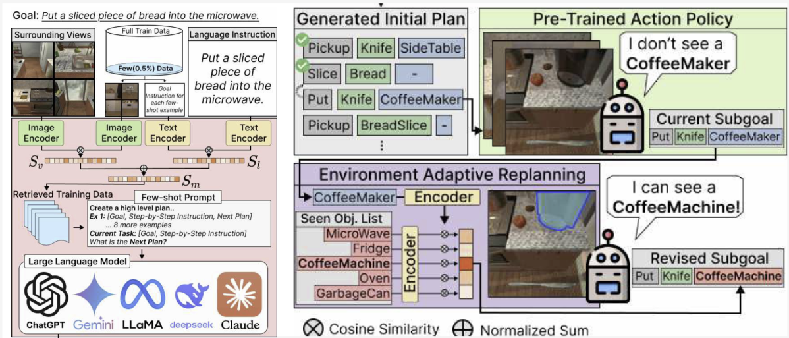
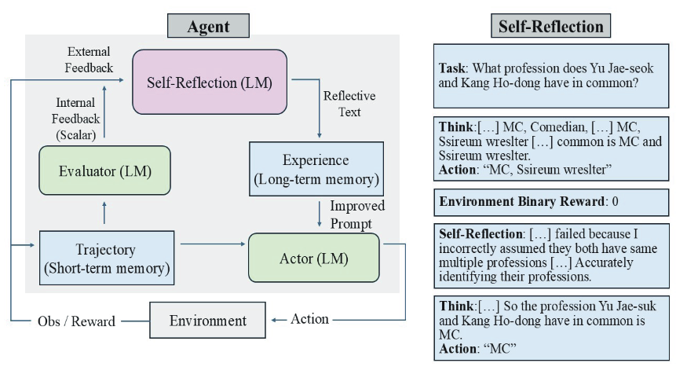
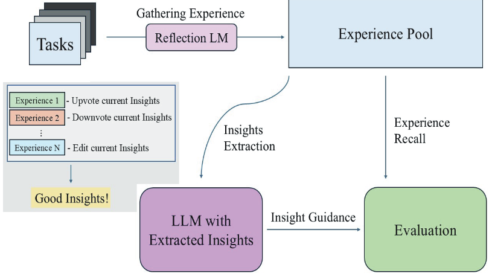
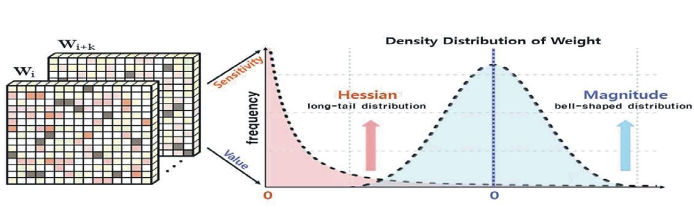
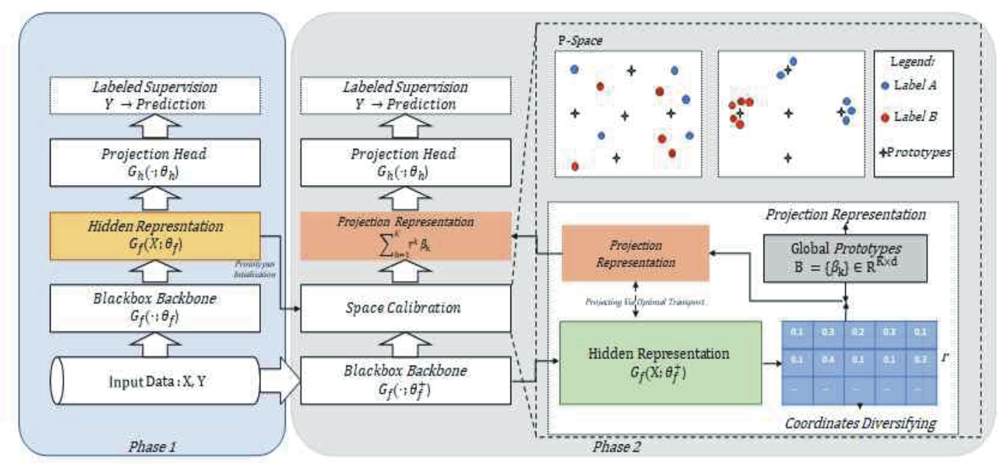

|
Chanyoung Kim
| 2026.04 |
🔥 LIBERO-Para featured as #3 on Hugging Face Daily Papers! (26.04.07) |
| 2026.03 |
First-author preprint LIBERO-Para: A Diagnostic Benchmark and Metrics for Paraphrase Robustness in VLA Models released on arXiv. |
| 2026.02 |
Joined the Human-Centered AI Lab at Chung-Ang University as an undergraduate researcher. |
| 2025.07 |
Paper on VLA pre-planning published at KCC 2025 (KIISE). |
| 2025.03 |
Survey paper on RL-based LLM prompt tuning published in KICS Journal. |
| 2024.11 |
Presented three papers at KICS Fall Conference 2024. |
| 2024.06 |
Joined the Human-Centered AI Lab at Soongsil University as an undergraduate researcher. |
| 2024.03 |
Started B.S. in Computer Science & Engineering at Soongsil University. |
Undergraduate Researcher
Feb 2026 – Present
|
Human-Centered AI Lab, Chung-Ang University
Advised by Prof. Dahuin Jung
|
Undergraduate Researcher
Jun 2024 – Feb 2026
|
Human-Centered AI Lab, Soongsil University
Advised by Prof. Dahuin Jung
- Research on VLA models and NLP, including linguistic robustness and multimodal policy learning
- Co-authored a paper on VLM pruning, submitted to ECCV 2026 (second author)
- Co-authored a paper on ID-preserving multi-view generation, submitted to SIGGRAPH 2026 (second author)
- Published 5 domestic papers (1 journal, 4 conference)
|
|

|
Vision-Language-Action 모델의 Pre-Planning LLM 모델에 따른 성능 및 평가 효율
Chanyoung Kim, Dahuin Jung
KCC 2025 (Korea Computer Congress), KIISE, Jul 2025
[paper]
|
|

|
강화학습에 기반한 LLM 프롬프트 조정 기법에 대한 최신 연구 동향 분석
Chanyoung Kim, Haneul Pyeon, Byungchan Ko, Dahuin Jung
KICS Journal (정보와통신), Vol.42(4), Mar 2025
[paper]
|
|

|
강화학습에 기반한 LLM 프롬프트 조정 기법에 대한 최신 연구 동향 분석
Chanyoung Kim, Haneul Pyeon, Byungchan Ko, Dahuin Jung
KICS Fall Conference, Nov 2024
[paper]
|
|

|
레이어 별 양자화 오류 최적화 기법 중심 거대 언어 모델에 대한 훈련 후 양자화 최신 기술 분석
Byungchan Ko, Hyunoh Kang, Chanyoung Kim, Dahuin Jung
KICS Fall Conference, Nov 2024
[paper]
|
|

|
비 순차형 정형 데이터에 대한 자가 지도 학습 기법에 관한 최신 기술 동향 분석
Haneul Pyeon, Chanyoung Kim, Jian Kim, Dahuin Jung
KICS Fall Conference, Nov 2024
[paper]
|
Dec 2024 –
Present |
Time-Series AI for Semiconductor Quality Inspection
- Human-Centered AI Lab × NDE+X Lab (Hanyang Univ.) · Sole student researcher under two faculty advisors
- Developing a model-agnostic, low-data training solution for challenging defect cases in GPU core components
|
Sep 2025 –
Present |
Efficient On-Device Semiconductor Inspection
- Human-Centered AI Lab × NDE+X Lab (Hanyang Univ.) · Collaborative research
- Exploring low-cost, efficient methods for non-destructive semiconductor testing on edge devices
|
Jan 2026 –
Present |
Medical LLM Agent
- Human-Centered AI Lab · Collaborative research
|
| 2024 |
Gold Prize, Computer System Basic Design (Capstone) Course, Soongsil University |
|